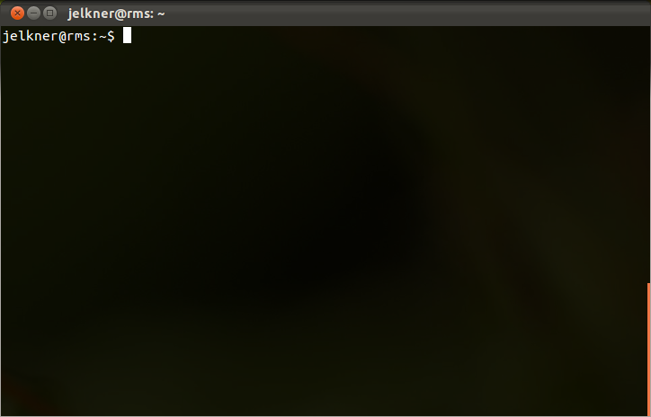

If you learned to use a personal computer within the last fifteen years or so, chances are you interacted with it using a graphical user interface, or GUI (pronounced gooey). The GUIs of common desktop operating systems are characterized by windows, icons, menus, and a pointer (mouse) that users manipulate to control the launching and operation of programs.
While GUIs certainly make computers easier to use for the average computer
user, they introduce greatly increased demands on the computer system, as
well as increased security and maintainance costs. On a personal desktop
system this tradeoff is worth the cost, but on a
server it
is frequently not. Instead, many servers use a
command-line
interface, or CLI instead of a GUI. Command-line interfaces
use text
commands
that users type at a
command prompt (which will be a $ on Ubuntu systems) to
control and manage applications.
A common CLI for websites is the Unix shell, which is the CLI that we will learn in this tutorial. A Unix shell is a command-line interface to the Unix operating system. Many web hosting services give customers a unix shell as the way to manage their websites. This tutorial has been developed for users of the Ubuntu distribution of the GNU/Linux operating system, but it should prove useful to users of other versions of Unix as well.
To start a Unix shell from an Ubuntu GUI desktop environment, look for a
program named Terminal (or sometimes console or
xterm on other Unix systems). Launching this program will give
you a desktop window that looks something like this:

Colors may be different and you may see a menu and scrollbar, but the important elements of the terminal program are:
$ character is called the
command prompt. It
tells you that the Unix command-line interpreter is ready to read and
process commands.definitionsthat effectively summarize the meanings for your own use.